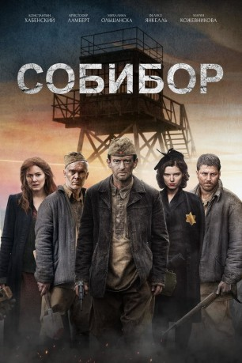
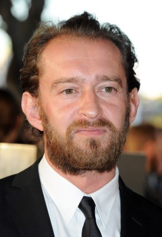

#10947 Sobibor
 
 IMDB-Wertung: 6.3 / 10
IMDB-Wertung: 6.3 / 10  Tomatometer: 75
Tomatometer: 75  Metascore: 0
Metascore: 0 
Oktober 1943: Während des Zweiten Weltkriegs sitzt Alexander Petscherskij, sowjetischer Leutnant der Roten Armee, im Vernichtungslager Sobibor in Polen ein. Er plant einen Ausbruch sämtlicher Gefangener, doch als er den Plan in die Tat umsetzen will, kommt alles anders. Einer Gruppe von Häftlingen unter Führung von Petscherskij gelingt jedoch die Flucht. Es ist der einzige Aufstand in einem Nazi-Vernichtungscamp, der zumindest teilweise Erfolg hat…
Jahr: 2018
Dauer: 117 Minuten
FSK:
Land: Russland Studio: Kinostar FilmverleihTonspuren:
Untertitel: Deutsch,
Auflösung: 1080p (1920x804) Größe: 4147 MB
Genre: Drama, Krieg, Geschichte
Regisseur: Konstantin Khabenskiy
Drehbuch: Anna Chernakova, Michael Edelstein, Ilya Vasiliev
Soundtrack:
Darsteller:
-  Konstantin Khabenskiy als Alexander Pechersky
- Christopher Lambert als Karl Frenzel
- Mariya Kozhevnikova als Selma
- Michalina Olszanska als Hanna
- Philippe Reinhardt als Siegfried Greitschus
- Maximilian Dirr als Johann Neumann
- Mindaugas Papinigis als Berg
- Wolfgang Cerny als Gustav Wagner
- Roman Ageev als Boris Tsybulsky
- Wieslaw Cichy als Józef
- Sergey Godin als Arkady Weispapir
- Darius Gumauskas als Bzetsky
- Mikolaj Krawczyk als Aksel
 Dirk Martens als Backman
Dirk Martens als Backman- Gela Meskhi als Semyon Rosenfeld
- Andrius Paulavicius als Otto
- Joshua Rubin als Jakob
- Saulius Balandis als Wolf
- Felice Jankell als Luca
- Dainius Kazlauskas als Leo
- Fabian Kociecki als Chaim
- Kacper Olszewski als Toowi
- Almutis Raila als Novak
- Ramunas Rudokas als Berlinger
- Evgeniy Sarmont als Leithman
- Severina Spakovska als
- Jovydas Starkus als German SS Officer
- Alexandra Vasilieva als Rivka
- Margarita Zemelite als Shlomo's mother
- Sarunas Zenkevicius als The Survivor
- Ivan Zlobin als Shlomo
Datei: X:\2018(N-Z)\Sobibor (2018, FSK, 1920x804).mkv seit 08.04.2019
Festplatte: HD 2018(G-Z)-2019(A-Z)
 Es gibt insgesamt 172 Filme in der Gruppe '2018(N-Z)'
Es gibt insgesamt 172 Filme in der Gruppe '2018(N-Z)'